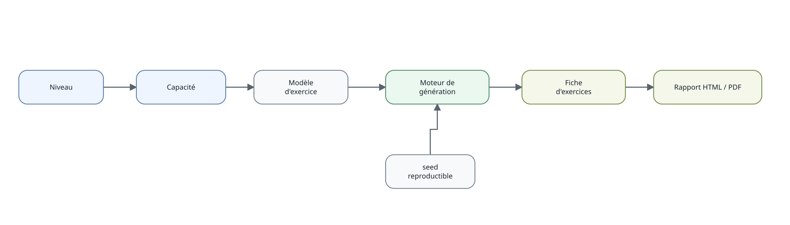

Exercices et révisions
exercices-et-revisions.Rmd
Le moteur d’exercices est déterministe lorsqu’un seed
est fourni. Pour voir immédiatement les énoncés dans la console :
generer_fiche(
"6E",
"ITM_MAT_C3_6E_C09",
n = 5,
seed = 123,
afficher = TRUE
)Produire une fiche HTML ou PDF
La sortie de generer_fiche() peut être envoyée
directement vers un document :
generer_fiche(
"6E",
"ITM_MAT_C3_6E_C09",
n = 10,
seed = 123
) |>
produire_fiche(format = "auto")Le nom est construit automatiquement à partir du niveau et de la
capacité. Pour une fiche multi-capacités, le suffixe mixte
est utilisé. L’argument fichier permet toujours de choisir
soi-même le chemin de sortie.
format = "auto" choisit le PDF si pdflatex
est disponible sur la machine et le HTML sinon. Pour imposer un format
:
generer_fiche("6E", "ITM_MAT_C3_6E_C09", n = 10, seed = 123) |>
produire_fiche(format = "html")
generer_fiche("6E", "ITM_MAT_C3_6E_C09", n = 10, seed = 123) |>
produire_fiche(format = "pdf")La sortie HTML ne nécessite pas LaTeX. Les deux formats reposent sur
le rendu R Markdown/Pandoc ; la sortie PDF nécessite en plus une
installation LaTeX fournissant pdflatex.
Produire le corrigé
Le même lot d’exercices peut être envoyé au template de corrigé :
generer_fiche("6E", "ITM_MAT_C3_6E_C09", n = 10, seed = 123) |>
produire_corrige(format = "auto")Les anciennes fonctions de rapport LaTeX restent disponibles pour
compatibilité, mais produire_fiche() et
produire_corrige() constituent l’interface conseillée pour
les nouveaux usages.
Fiches de révision mathématiques
À partir de la version 0.11.0, les révisions constituent un moteur distinct des exercices. Les fiches sont structurées en familles et reliées aux notions déjà présentes dans la base documentaire.
La seconde générale et technologique sert de niveau pilote :
fiches_revision("2GT")Une fiche thématique peut être construite puis envoyée directement vers le rendu HTML ou PDF :
generer_revision("2GT", "GEOMETRIE") |>
produire_revision(format = "auto")Les familles disponibles en seconde couvrent notamment nombres et algèbre, géométrie, fonctions, statistiques-probabilités, algorithmique, logique et automatismes.
Pour les révisions de dernière minute, une fiche beaucoup plus dense conserve uniquement les formules, méthodes et points de vigilance essentiels :
generer_essentiel("2GT") |>
produire_revision(format = "auto")Le contenu des fiches est stocké dans inst/revision/.
Les relations avec les notions existantes sont séparées du contenu
éditorial, de sorte qu’une fiche de révision reste une vue synthétique
du système d’information et ne constitue pas une nouvelle source de
vérité.